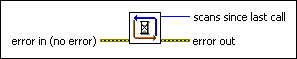

Synchronize to Scan Engine VI
Owning Palette: NI Scan Engine VIs
Requires: Base Development System (Real-Time, Windows)
Synchronizes execution timing to the scan period of the NI Scan Engine. This VI waits for each scan to complete and triggers subsequent code to execute once the scan engine has updated all values.
Use the Scan Engine page to configure the scan period. You also can use the Set Scan Engine Period VI to set the scan period programmatically.

 Add to the block diagram Add to the block diagram |
 Find on the palette Find on the palette |